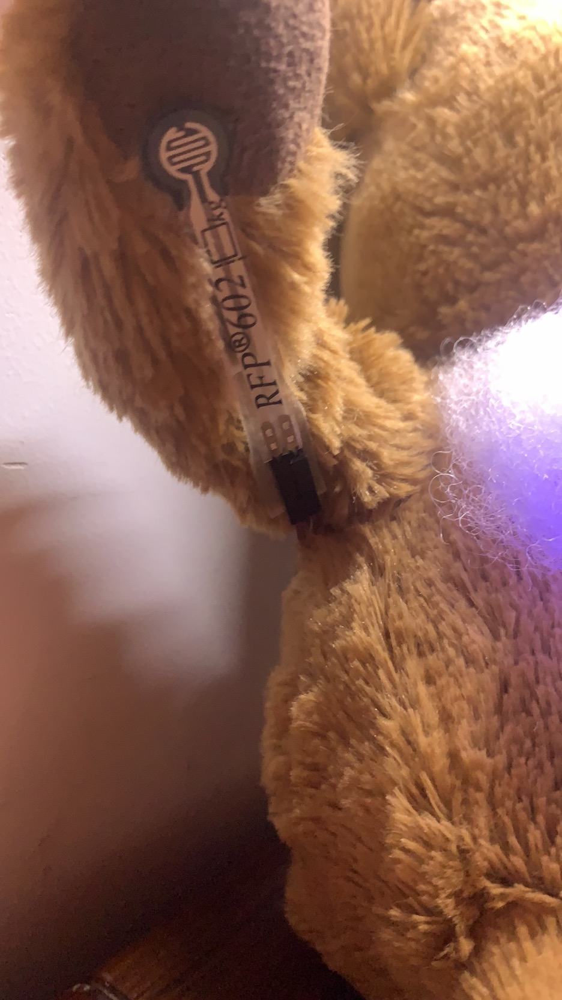
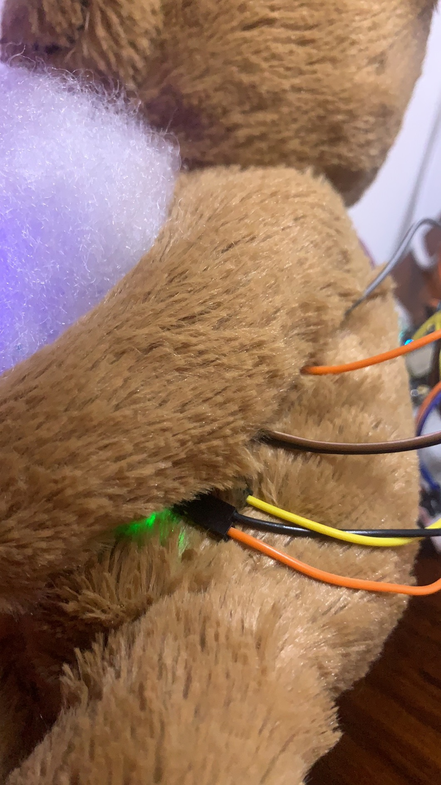

DigitalEcologies
CareBear
Tools: Particle Photon board, P5.js
Project PageIdeation
CareBear is an interactive physical + digital creature. I recommend you to place it on your bedside table. When you see the blue light is on, that means the room light is turned on in your partner's place. Try to hold its hand, then you'll see the red light turned on. And this intimate action will also be sent to your partners board and can be noticed in the form of light color changing. It is also connected to the webpage, a digital version, revealing the unspoken, hidden feeling of this little bear. You'll see the interactive warm background light and vibrate heart beating.
Structures
 Initial Thoughts

Use the LEDs and pressure sensors and motor to build the creature. It's a little creature observing the status of the laptop. Led and motor will respond to the pressing of some keyboard like "!""?""0"(lucky number). Yes,it is super "emotional"
Reflections